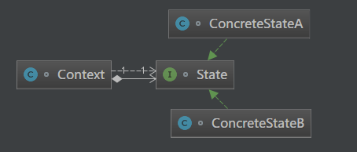

原文出处:本文由博客园博主知了一笑提供。
原文连接:https://www.cnblogs.com/cicada-smile/p/11914655.html
原文连接:https://www.cnblogs.com/cicada-smile/p/11914655.html
本文源码：GitHub·点这里 || GitEE·点这里
一、生活场景
1、场景描述
变色龙是爬行动物，是非常奇特的动物，它有适于树栖生活的种种特征和行为，身体也会随着环境的变化而变化出适应环境的颜色，非常神奇。下面基于状态模式对该变化过程进行描述。
2、代码实现
public class C01_InScene {
public static void main(String[] args) {
Chameleon chameleon = new Chameleon("红色","花丛环境") ;
LifeContext lifeContext = new LifeContext() ;
// 树叶环境
BodyColor bodyColor = new GreenColor ();
lifeContext.setBodyColor(bodyColor);
lifeContext.change(chameleon);
// 树枝环境
bodyColor = new GrayColor() ;
lifeContext.setBodyColor(bodyColor);
lifeContext.change(chameleon);
}
}
/**
* 变色龙
*/
class Chameleon {
public String color ;
public String contextDesc ;
public Chameleon(String color, String contextDesc) {
this.color = color;
this.contextDesc = contextDesc;
}
}
/**
* 变色龙生存环境
*/
class LifeContext {
private BodyColor bodyColor;
public void setBodyColor(BodyColor bodyColor) {
this.bodyColor = bodyColor;
}
public void change (Chameleon chameleon){
bodyColor.change(chameleon) ;
}
}
/**
* 变色龙身体颜色抽象类
*/
interface BodyColor {
void change (Chameleon chameleon);
}
/**
* 变色龙身体颜色具体类
*/
class GreenColor implements BodyColor {
@Override
public void change(Chameleon chameleon) {
System.out.println("变化前："+chameleon.color+";"+chameleon.contextDesc);
chameleon.contextDesc = "树叶环境" ;
chameleon.color = "绿色" ;
System.out.println("变化后："+chameleon.color+";"+chameleon.contextDesc);
}
}
class GrayColor implements BodyColor {
@Override
public void change(Chameleon chameleon) {
System.out.println("变化前："+chameleon.color+";"+chameleon.contextDesc);
chameleon.contextDesc = "树枝环境" ;
chameleon.color = "灰色" ;
System.out.println("变化后："+chameleon.color+";"+chameleon.contextDesc);
}
}二、状态模式
1、基础概念
状态模式是对象的行为模式，状态模式允许一个对象在其内部状态改变的时候改变其行为。状态模式把对象的行为封装在不同状态的对象中，每一个状态对象都是抽象状态类的子类。意图是让一个对象在其内部状态改变的时候，其行为也随之改变。
2、模式图解

3、核心角色
- 环境角色
持有具体状态类的对象实例。这个具体状态类的实例给出此环境对象的现有状态。
- 抽象状态角色
定义一个接口，封装环境对象的状态所对应的行为。
- 具体状态角色
具体状态类实现了环境的状态所对应的行为。
4、源码实现
public class C02_State {
public static void main(String[] args){
Context context = new Context();
State state = new ConcreteStateA() ;
context.setState(state);
context.printInfo("当前环境状态A");
state = new ConcreteStateB();
context.setState(state);
context.printInfo("当前环境状态B");
}
}
/**
* 环境角色
*/
class Context {
private State state;
public void setState(State state) {
this.state = state;
}
public void printInfo (String info) {
state.stateInfo(info);
}
}
/**
* 抽象状态角色
*/
interface State {
void stateInfo (String param);
}
/**
* 具体状态角色
*/
class ConcreteStateA implements State {
@Override
public void stateInfo (String info) {
System.out.println("ConcreteStateA：" + info);
}
}
class ConcreteStateB implements State {
@Override
public void stateInfo (String info) {
System.out.println("ConcreteStateB：" + info);
}
}三、模式总结
- 将容易产生问题的if-else语句拆分，状态模式将每个状态的行为封装到对应的一个类中，代码有很强的可读性。
- 符合“开闭原则”，容易增删操作，管理状态。
- 会存在很多状态时。每个状态都要一个对应的类，会产生很多类，增加维
护难度。 - 应用场景：当一个事件或者对象有很多种状态，状态之间会相互转换，不同的状态有不同的行为，可以考虑使用状态模式。
四、源代码地址
GitHub·地址
https://github.com/cicadasmile/model-arithmetic-parent
GitEE·地址
https://gitee.com/cicadasmile/model-arithmetic-parent：状态模式1.png)